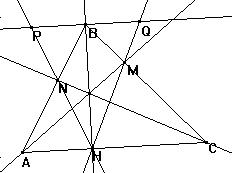

Solucion del profesor Julio Propuesto por el profesor Julio A. Miranda Ubaldo (El mundo maravilloso de las Matemáticas), de la Academia San Isidro (Huaral), de Perú
71.- Teorema de Blanchet.
En todo triángulo ABC de altura BH, al trazar las cevianas AM y CN concurrentes con BH, se establece que la altura será bisectriz del ángulo MHN.
Veamos la siguiente figura y los trazos adecuados que hay que efectuar y que la demostración indica:

Por B trazamos una paralela a AC tal que corta a las prolongaciones de HN y HM en los puntos P y Q, respectivamente.
Luego HB es perpendicular a PQ.
Como AM, BH y CN son concurrentes, apliquemos el Teorema de Ceva:
AN BM CH = NB MC HA,
Pero el triángulo PBN es semejante al AHN, por lo que AN PB = NB AH
Además, BQM es semejante a HMC , y BM HC = BQ MC .
Multiplicando estas igualdades, se obtiene que:
AN PB BM HC = NB AH BQ MC
Simplificando PB = BQ, y, en consecuencia, PHQ es isósceles y
los ángulos NHB y MHB son iguales, c.q.d.